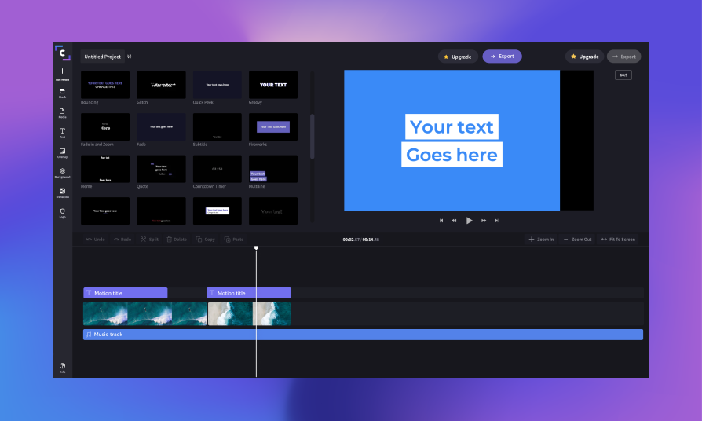

Experimental Film Project
The Relationship Between Media and Audiences
With media being one of my threads in CM, the exploration of the media-to-viewer relationship was always interesting to me. How and why people engage in films, games, and even things like advertising is fascinating to me. Taking Professor Gregory Zinman's experimental film class shed some light on these questions, but I wanted to explore those ideas myself, and that led me to this film.
The Premise
Buoy uses violent visual flashing, aggressive audio tracks and a lack of true convention to create a warped relationship with its viewership. By doing so, it asks its audiences to question what responsibility it has in offering them a comfortable or even interpretable experience.
Techniques
This film was my first venture into frame by frame animation. Most frames were created using Adobe Illustrator, but the work there was very rudamentary. The editing work afterwards was the real creative challenge. Arranging the frames to create both chaos and thematic progression was difficult, but its also where a learned the most.

Arrangement
The film was put together using Microsoft's Clipchamp editor, a simple but powerful tool to make short, minimal films like mine. Its a tool I went on to create more films with, and my work in Buoy certainly gave me confidence and the ability to focus on the films themselves rather than the effort to craft them.